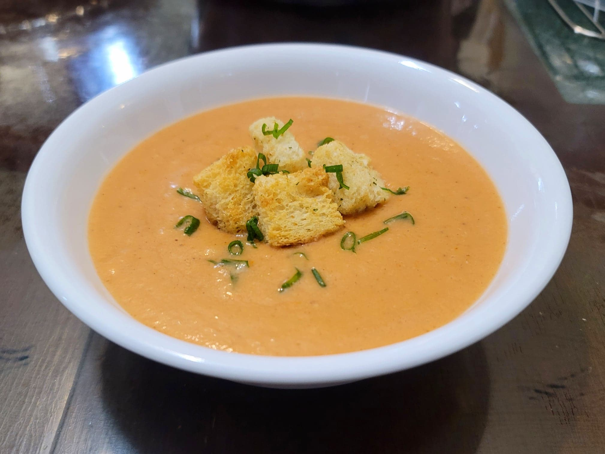

Gazpacho

Ingredients:
- 2 lb Roma tomatoes, halved and stemmed
- 1 small (1/2 lb) Cucumber, peeled, optionally seeded
- 1 medium Green bell pepper, cored
- 1/2 small Red onion, halved
- 2 small cloves Garlic
- 2 slices White bread, crust removed
- 3 tbsp Olive oil
- 2 tbsp Sherry vinegar or Red wine vinegar
- 1 tsp Salt
- 1/2 tsp Black pepper
- 1/2 tsp Cumin
- Optional: Croutons, to garnish
- Optional: Parsley or any Fresh herbs, to garnish
Instructions:
- Take all the ingredients and place into a blender. Blend until very smooth. Refrigerate for at least 3-4 hours or preferably overnight. Serve cold, optionally garnished with croutons and fresh herbs.